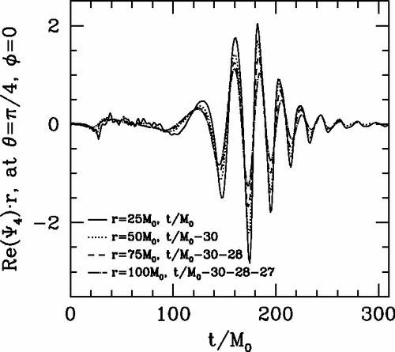

4 Waveform Generation
The matched filtering approach introduced in the previous section motivates the development of tools for generating waveforms. The matched filtering technique is especially sensitive to the phase of the Gravitational Wave (GW) , necessitating precise determination of the waveform template’s phase. These templates can be varied in physical content, but also in practicality. In all cases they need to be able to cover the set of parameters (the parameter space) that one is interested in exploring. Clearly, if the waveform has been generated purely heuristically, then the physical content of the detection is close to zero. From this approach, one can only deduce that a phenomenon producing a similar waveform was detected, but not much more. However, if the input parameters are physically meaningful, e.g. the mass ratio of a binary compact inspiraling system, then the waveform constructed purely from this input, if matched to the signal, tells us that a compact binary inspiraling system with this mass ratio has been detected. This is called parameter estimation, and is key to maximizing the physics output of a detection.
Crucially, the waveform generation must be able to cover the whole parameter space (for example all feasible mass ratios) to be useful, as one does not know in advance the parameters describing the system to be identified. Ideally waveform generation should be done in a way that is computationally efficient, as the number of parameters as well as their range to explore is large. In the end, waveform generation is currently performed in a hybrid way: some waveforms for specific parameter space points, are generated from first principles, while the rest of the parameter space waveforms are interpolated.
In this chapter we will describe the first-principles waveform generation tools currently being developed. More specifically we will explore techniques for compact binary waveforms. In this context waveforms may describe inspiralling or scattering binaries. Currently, only the inspiralling binaries have been detected, as these are the systems whose signal Laser Interferometer Gravitational-Wave Observatory (LIGO) and other detectors are most sensitive to (see Section 3.1.1), other than being by far the most common emitters of high-intensity GW As discussed in Section 2.4.1, orbiting and GW emitting compact objects will necessarily inspiral and merge at some point.
For such inspiraling binaries, the waveform features 3 distinct phases: a first inspiral phase, a merger phase where a remnant compact body is produced as a result of the coalescence of the two objects, and a postmerger, or ringdown phase, where the remnant still emits gravitational radiation while settling to its new stable configuration. Each phase is characterized by different dynamical properties of the orbiting bodies and thus different frameworks are aimed at describing the corresponding features of the waveforms. Even the description of one phase involves different regimes, and thus more specific framework, additionally dependent on the type/initial state of the two orbiting bodies.
There is also hope to detect scattering binaries as argued in [1], but they are currently mainly used as a testbed for new theories making use of particle physics knowledge. Additionally, one might be able to extend their validity to inspiraling binaries [see 2].
Most of these techniques have two important parts. The first consists in the precise modelling of the evolution of the emitting system. In most cases, this boils down to obtaining the Equation of Motion (EOM) for the interacting bodies. For scattering, this can just be the amplitude of the event. The second part is extracting the variation of the metric due to the source movement at the measurement point, far away from the source, i.e., the waveform. Of course, the metric at the source is tightly coupled to the dynamics of the system, and thus the approximations conducted at the source also effects the way one extracts the waveform.
The only full, first-principles waveform techniques are NR and EOB 1. NR is quite unique when compared to other methods. Let us look at it before proceeding to EOB and all the inspiral waveform techniques.
1 There are a whole family of phenomenological frameworks that we will not discuss
4.1 NR
The most precise, first-principles waveform-generation technique to date is numerical relativity NR It was developed as early as the 1960s [3]. Initially and until relatively recently, these numerical methods were unusable because of numerical instabilities. The idea, however, is simple: the Einstein Field Equations (EFE) are a system of coupled partial differential equations (PDEs) (albeit nonlinear) that can be solved numerically by discretizing the metric. The causes of instability is three-fold. First, the aforementioned non-linearities make the discretization particularly sensitive to extreme variations, such as those close to a Black Hole (BH) which means that one needs a fine mesh to control error buildup. Second, the gauge freedom establishes limits on the type of discretization procedures, so that spurious modes are not introduced. Third, for BH one needs to consider what to do about the physical metric singularity, as infinity is not a number one can plug into a computer! On top of stability problems, when compact binary objects are considered, the scales involved further complicate things, as one needs enough resolution to resolve the objects, and the deformations on the metric, as well as a large enough volume to have reasonable orbits. This requires a huge amount of lattice nodes, meaning such simulations (even if stable) are extremely computationally expensive.
In 2005 [Pretorious 4] and a little later [Campanelli et al. 5] made a breakthrough advance and were able to fully compute an inspiral-merger-ringdown sequence for a Binary Black Hole (BBH) . Pretorius made use of two techniques: Adaptive Mesh Refinement (AMR) and the Generalized Harmonic (GH) formalism. AMR , like its name suggests, is a technique based on a dynamical discretization procedure . The GH formalism, tackles the singularity problem validating the excision of the black hole, and crucially letting that region move. The combination of the procedures, were able to finally slay the proverbial numerical dragon.
These waveforms, such as the one in Figure 4.1, confirmed the predictions made in [Buonanno and Damour 6] that the merger phase of a BBH would not be as complicated as previously thought. As numerical techniques evolved further, they were able to elucidate more and more complex behaviors.

Nowadays, it is the gold standard of waveform generation. Of course, it remains incredibly computationally expensive 2 and making any sizable bank of purely NR waveforms is seen as a fools endeavor. To date, only a couple hundred parameter space points have been simulated. Consequently, NR is used to complement, calibrate and extend the other waveform generation techniques. For example to detect the first signals LIGO and other detectors interpolated between NR parameter space points to reach the ones needed for detection. However, with the advent of Laser Interferometer Space Antenna (LISA) on the horizon, a further problem will arise. NR results by nature only take into account the last few orbit cycles before merger. Any more than that and computational time becomes prohibitive. LISA with its low noise floor, should be able to detect inspiraling but not yet merging binaries. Doing so will require waveform templates with hundreds of orbits, well out of reach of any modern NR package. Nonetheless, this technique has shown and will continue to show its worth, as no approximations other than discretization are made. The physical content of such waveforms is thus high.
2 A single waveform with 10 orbits can take a week and tens of thousands of CPU hours
4.2 Inspiral methods
Before continuing to the EOB method, let us look at the techniques that focus on the inspiral part of the waveform. There are broadly speaking three methods that fall in this category. The first we have already encountered at 1st order: PN . It is a perturbative expansion in both relative velocity (slow moving limit) and the coupling constant \(\texttip{G}{gravitational constant}\) (weak field limit) of the EFE . The second is the PM method, which is a perturbative expansion in only the coupling constant \(\texttip{G}{gravitational constant}\). At face value the PM method contains the PN one as a special case, however as at zeroth order, the PM approximation captures straight line motion, and is generally more expressive of scattering. The final approximation can be applied when the mass ratio of the object in question is large. Here one can expand around a fixed but non-flat metric, essentially considering one of the objects as a test-particle evolving on a background caused by the heavier object. This is called the Gravitational Self-Force (GSF) formalism.
4.2.1 PN
The PN expansion, is a perturbative expansion of EFE in the orbital regime, which at Leading Order (LO) reproduces Newtonian gravity. Consider a system of orbiting bodies with typical values \(\bar{M},\bar{R},\bar{v}\) for masses, separations, and velocities. Then, the viral theorem states:
\[ \langle T \rangle_\tau=-\tfrac{1}{2}\langle U \rangle \implies \quad \bar{M} \bar{v}^2\sim \frac{G \bar{M}^2}{\bar{R}} \tag{4.1}\]
thus we can consider the following equivalent small parameters:
\[ \bar{v}^2\sim \frac{\texttip{G}{gravitational constant}\bar{M}}{\bar{R}} \]
We therefore expand in both velocities and coupling constant. This can be achieved either by a classical (albeit quite complicated) perturbative treatment [see 7,8], or a more contemporary EFT approach coyly called Nonrelativistic General Relativity (NRGR) [9,10], itself inspired by Non-Relativistic Quantum Chromodynamics (NRQCD) . We call \(n\)PM the expansion carried out to \(\mathcal{O}(v^{2n})\).
Regardless of method, there are a few shortcomings with this expansion. While it is well suited to describe the motion of objects in an orbital regime, it is not equally effective at describing gravitational radiation far from the source, as it exhibits divergences for \(r\to\infty\)3. This means that in the GW context, the PN expansion is in fact usually coupled to a weak-field approximation (see below), outside the near zone. This is the region surrounding the source, that is of small extent compared to the wavelength of the emitted radiation:
3 In HEP speak this is called an infrared divergence
\[ r \ll \lambda \tag{4.2}\]
The PN expansion can also be viewed as an expansion in small ‘retardations’. To see this, consider a slowly moving source, such that the time derivatives of the metric generated by this source will be smaller than the spatial derivatives by a factor \(\mathcal{O}(v^{})\), \[ \frac{\partial}{\partial t}=\mathcal{O}(v^{}) \frac{\partial}{\partial x^i}, \] or \(\partial_0=\mathcal{O}(\epsilon)^{}) \partial_i\). Thus, the d’Alembertian operator, applied to the metric is, to lowest order, a Laplacian operator \[ -\frac{1}{c^2} \frac{\partial^2}{\partial t^2}+\nabla^2=\left[1+O\left(\epsilon^2\right)\right] \nabla^2 . \]
This means that retardation effects, due to the time derivative, are small corrections. In the PN expansion we are consequently trying to compute some quantity \(F(t-r)\), such as a component of the metric, which is intrinsically a function of the retarded time \(t_r=t-r\), from its expansion for small retardation \(r\), \[ F(t_r)=F(t)-{r} \dot{F}(t)+\frac{r^2}{2} \ddot{F}(t)+\ldots \]
Importantly, the derivatives should bring down factors proportional to frequency \(\Omega\) of the emitted radiation. Thus, this is in fact an expansion in \(r \Omega\sim r / \lambda\), which is only valid in the near zone as defined by eq. 4.2, and breaks down outside this zone, in the so-called radiation zone. A serious consequence of this fact is that the pure, naive PN expansion is unable to account for outgoing or incoming radiation, and thus unable to describe isolated systems. This is where the PM expansion comes in.
4.2.2 PM
The PM expansion is a weak field expansion of EFE in the coupling constant \(\texttip{G}{gravitational constant}\). It thus covers all orders in velocity of the PN expansion, at any fixed \(\texttip{G}{gravitational constant}\) order. We usually call \(nPM\) the corresponding \(\mathcal{O}(\texttip{G}{gravitational constant}^{n})\)-truncated expansion. Historically, it was derived with the objective of being the radiation zone partner to the PN expansion, as it provides a description of the propagation of the waves up to the observer. When used with the PN expansion in such a way, the PM expansion is used to solve the vacuum EFE . It is usually set up to compute a version of the metric perturbation that is exact:4
4 We have used \(\texttip{\texttip{\texttip{h}{weak metric tensor}{}_{{\mu\nu}}}{covariant mathbftor component}}{weak covariant metric tensor component}\) to denote the linear perturbation, whereas \(\texttip{\textsf{h}{}_{\mu\nu}}{covariant mathbftor component}\) is the all order metric perturbation.
\[\texttip{\textsf{h}{}_{\mu\nu}}{covariant mathbftor component}=\sqrt{-\texttip{g}{metric tensor}} \texttip{\texttip{\texttip{g}{metric tensor}{}^{{\mu\nu}}}{contravariant mathbftor component}}{contravariant metric tensor component}-\texttip{\texttip{\texttip{\eta}{Minkoski metric tensor +---}{}^{{\mu\nu}}}{contravariant mathbftor component}}{contravariant Minkoski metric components +---}.\]
The PM expansion is then given as
\[ \sqrt{-\texttip{g}{metric tensor}} \texttip{\texttip{\texttip{g}{metric tensor}{}^{{\mu\nu}}}{contravariant mathbftor component}}{contravariant metric tensor component}=\texttip{\texttip{\texttip{\eta}{Minkoski metric tensor +---}{}^{{\mu\nu}}}{contravariant mathbftor component}}{contravariant Minkoski metric components +---}+ \texttip{G}{gravitational constant}\texttip{\textsf{h}_{1}{}^{\mu\nu}}{contravariant mathbftor component}+\texttip{G}{gravitational constant}^2 \texttip{\textsf{h}_{2}{}^{\mu\nu}}{contravariant mathbftor component}+\ldots, \]
meaning that: \[ \texttip{\textsf{h}{}^{\mu\nu}}{contravariant mathbftor component}=\sum\limits_{n=1}^{\infty} \texttip{G}{gravitational constant}^n \texttip{\textsf{h}_{n}{}^{\mu\nu}}{contravariant mathbftor component} . \]
The EFE for this metric perturbation, when imposing De-Donder gauge conditions (eq. 2.9), is given by
\[ \mathtip{\Box_{SR}}{\texttip{\texttip{\texttip{\eta}{Minkoski metric tensor +---}{}^{{\mu\nu}}}{contravariant mathbftor component}}{contravariant Minkoski metric components +---}\partial_{\mu}\partial_{\nu}}\texttip{\textsf{h}{}^{\mu\nu}}{contravariant mathbftor component}=-16 \pi \texttip{G}{gravitational constant}\texttip{\textsf{h}{}^{\mu\nu}}{contravariant mathbftor component}\texttip{\tau{}^{\mu\nu}}{contravariant mathbftor component}. \tag{4.3}\]
where \(\texttip{\tau{}^{\mu\nu}}{contravariant mathbftor component}\) is the effective energy-momentum tensor given by:
\[ \texttip{\tau{}^{\mu\nu}}{contravariant mathbftor component}=(-\texttip{g}{metric tensor})\texttip{\texttip{\texttip{T}{Stress-Energy tensor, or energy-momentum tensor}{}^{{\mu\nu}}}{contravariant mathbftor component}}{contravariant Stress-Energy tensor component}-\frac{1}{16 \pi \texttip{G}{gravitational constant}}\texttip{\Lambda{}^{\mu\nu}}{contravariant mathbftor component}. \]
\(\texttip{\Lambda{}^{\mu\nu}}{contravariant mathbftor component}\) contains all non-linear terms of the Einstein tensor, and its definition can be obtained by comparing with eq. 2.1. Thus, it depends on the metric and thus on \(\texttip{\textsf{h}{}_{\mu\nu}}{covariant mathbftor component}\) in a highly non-linearly fashion. We can write it as:
\[ \texttip{\Lambda{}^{\mu\nu}}{contravariant mathbftor component}=\texttip{L{}^{\mu\nu}}{contravariant mathbftor component}[\textsf{h},\textsf{h}]+\texttip{M{}^{\mu\nu}}{contravariant mathbftor component}[\textsf{h},\textsf{h},\textsf{h}]+\texttip{N{}^{\mu\nu}}{contravariant mathbftor component}[\textsf{h},\textsf{h},\textsf{h},\textsf{h}]+\mathcal{O}(\textsf{h}^{5}). \]
Here the number of \(\textsf{h}\)’s in the argument of \(L,M\) and \(N\) indicates the order of the non-linear term. In a vaccuum eq. 4.3 reduces to
\[ \mathtip{\Box_{SR}}{\texttip{\texttip{\texttip{\eta}{Minkoski metric tensor +---}{}^{{\mu\nu}}}{contravariant mathbftor component}}{contravariant Minkoski metric components +---}\partial_{\mu}\partial_{\nu}}\texttip{\textsf{h}{}^{\mu\nu}}{contravariant mathbftor component}=\texttip{\Lambda{}^{\mu\nu}}{contravariant mathbftor component}, \]
which we can solve iteratively order by order:
\[ \begin{aligned} \mathtip{\Box_{SR}}{\texttip{\texttip{\texttip{\eta}{Minkoski metric tensor +---}{}^{{\mu\nu}}}{contravariant mathbftor component}}{contravariant Minkoski metric components +---}\partial_{\mu}\partial_{\nu}}\texttip{\textsf{h}_{1}{}^{\mu\nu}}{contravariant mathbftor component}&=0,\\ \mathtip{\Box_{SR}}{\texttip{\texttip{\texttip{\eta}{Minkoski metric tensor +---}{}^{{\mu\nu}}}{contravariant mathbftor component}}{contravariant Minkoski metric components +---}\partial_{\mu}\partial_{\nu}}\texttip{\textsf{h}_{2}{}^{\mu\nu}}{contravariant mathbftor component}&=\texttip{L{}^{\mu\nu}}{contravariant mathbftor component}[\textsf{h}_{1},\textsf{h}_{1}],\\ \mathtip{\Box_{SR}}{\texttip{\texttip{\texttip{\eta}{Minkoski metric tensor +---}{}^{{\mu\nu}}}{contravariant mathbftor component}}{contravariant Minkoski metric components +---}\partial_{\mu}\partial_{\nu}}\texttip{\textsf{h}_{3}{}^{\mu\nu}}{contravariant mathbftor component}&=\texttip{M{}^{\mu\nu}}{contravariant mathbftor component}[\textsf{h}_{1},\textsf{h}_{1},\textsf{h}_{1}]+\texttip{L{}^{\mu\nu}}{contravariant mathbftor component}[\textsf{h}_{1},\textsf{h}_{2}]++\texttip{L{}^{\mu\nu}}{contravariant mathbftor component}[\textsf{h}_{2},\textsf{h}_{1}]\\ \end{aligned} \]
This method can be supplemented by a multipolar expansion of the \(\texttip{\textsf{h}_{n}{}^{\mu\nu}}{contravariant mathbftor component}\), truncated to the specific PM order we are interested in. This combined expansion was pioneered by [Bonnor and Rosenhead 11], then formalised by [Thorne 12], and finally applied in this present context by [Blanchet 13].
In terms of source dynamics, it is more appropriate (and uniquely able) to describe inherently relativistic phenomena, such as gravitational scattering. Its wider scope of applicability comes at the cost of a higher computational complexity, as at higher orders one encounters intricate families of relativistic integrals. Note that we have in fact computed the 1 PM approximation already in the Chapter 3 when we linearized the EFE Higher orders are far more difficult to obtain, especially for sources such as BBH
With the rise of amplitude techniques from high energy physics, both EFT and full theory results have been successful in extracting previously unreachable orders. Such techniques are perfectly suited to compute relativistic scattering as they were developed for this specific task. We will see this in the next chapter.
4.3 EOB
The second full-waveform generation technique is the EOB formalism. It was initially developed by [Buonanno and Damour 14], as a non-perturbative re-summing of the PN expansion. It was later extended to include the merger and ringdown effects in [Buonanno and Damour 6]. Thus, it became the first full waveform generating technique to actually produce a waveform. It has gotten progressively more powerful, as the PN expansions have gotten better. More recently PM results have also been included [15]. Additionally, EOB can be combined with NR to produce a very accurate waveform, with less computational overhead than NR alone.
As its name suggests, the EOB framework combines all the PN PM and NR data into a Hamiltonian describing the motion of a single body. It is inspired by solutions of two-body problems in Newtonian gravity which make use of barycentric coordinates to turn it into a one body problem. Further inspiration came from the two body problem in Quantum Electrodynamics (QED) [see 16] .
Consider two bodies, with masses \(\texttip{m_{1}}{mass}\) and \(\texttip{m_{2}}{mass}\), positions \(\texttip{\mathbf{{q}}_{1}}{3-vector}\), \(\texttip{\mathbf{{q}}_{1}}{3-vector}\) and momenta \(\texttip{\mathbf{{\texttip{p_{1}}{external momentum}}}_{}}{3-vector}\) and \(\texttip{\mathbf{{\texttip{p_{2}}{external momentum}}}_{}}{3-vector}\) respectively. The system can be described by the following Hamiltonian:
\[ \mathcal{H}_{\text{newton}}(\texttip{\mathbf{{q}}_{1}}{3-vector},\texttip{\mathbf{{q}}_{1}}{3-vector},\texttip{\mathbf{{\texttip{p_{1}}{external momentum}}}_{}}{3-vector},\texttip{\mathbf{{\texttip{p_{2}}{external momentum}}}_{}}{3-vector})= \frac{\texttip{\mathbf{{\texttip{p_{1}}{external momentum}}}_{}}{3-vector}^2}{2\texttip{m_{1}}{mass}} + \frac{\texttip{\mathbf{{\texttip{p_{2}}{external momentum}}}_{}}{3-vector}^2}{2\texttip{m_{2}}{mass}} - \frac{G\texttip{m_{1}}{mass}\texttip{m_{2}}{mass}}{\vert\texttip{\mathbf{{q}}_{1}}{3-vector}-\texttip{\mathbf{{q}}_{1}}{3-vector} \vert} \]
One then transforms this Hamiltonian into one describing the relative motion \(\texttip{\mathbf{{q}}_{}}{3-vector}=\texttip{\mathbf{{q}}_{1}}{3-vector}-\texttip{\mathbf{{q}}_{1}}{3-vector}\). One can formalize this by defining a new set of generalized coordinates, through a canonical transformation. We can go even further and employ a generating function for the transformation, ensuring that Hamilton’s equations remain unchanged in form (see [17]). To describe relative motion, we use Jacobi coordinates \((\texttip{\mathbf{{Q}}_{}}{3-vector},\texttip{\mathbf{{q}}_{}}{3-vector})\): \[ \begin{pmatrix} \texttip{\mathbf{{q}}_{1}}{3-vector} \\ \texttip{\mathbf{{q}}_{2}}{3-vector}\end{pmatrix}\to \underbrace{\begin{pmatrix} \frac{\texttip{m_{1}}{mass}}{M} & \frac{\texttip{m_{2}}{mass}}{M} \\ 1&-1 \end{pmatrix}}_{=A} \begin{pmatrix} \texttip{\mathbf{{q}}_{1}}{3-vector} \\ \texttip{\mathbf{{q}}_{2}}{3-vector}\end{pmatrix}=\begin{pmatrix} \texttip{\mathbf{{Q}}_{}}{3-vector} \\ \texttip{\mathbf{{q}}_{}}{3-vector}\end{pmatrix} \tag{4.4}\]
If we now define the following generating function for the transformation, depending on the old positions coordinates \(\texttip{\mathbf{{q}}_{i}}{3-vector}\) and the new momenta \(\texttip{\mathbf{{P}}_{i}}{3-vector}\):
\[ f_{II}(\texttip{\mathbf{{q}}_{i}}{3-vector},\texttip{\mathbf{{P}}_{i}}{3-vector})=\texttip{\mathbf{{P}}_{i}}{3-vector}A^{ij}\texttip{\mathbf{{q}}_{j}}{3-vector}, \tag{4.5}\]
then the old momenta are given by
\[ \texttip{\mathbf{{\texttip{p_{i}}{external momentum}}}_{}}{3-vector}=\frac{\partial_{}^{} f_{II}}{\partial_{}{\texttip{\mathbf{{q}}_{i}}{3-vector}}^{}}=\texttip{\mathbf{{P}}_{i}}{3-vector} A^{ij} \iff \texttip{\mathbf{{P}}_{i}}{3-vector}=[A^{-1}]{}^{ij}\texttip{\mathbf{{\texttip{p_{j}}{external momentum}}}_{}}{3-vector}. \tag{4.6}\]
Where we can directly invert this equation and obtain the new momenta as:
\[ \begin{pmatrix} \texttip{\mathbf{{P}}_{}}{3-vector} \\ \texttip{\mathbf{{p}}_{}}{3-vector}\end{pmatrix}=\begin{pmatrix} \texttip{\mathbf{{P}}_{1}}{3-vector} \\ \texttip{\mathbf{{P}}_{2}}{3-vector}\end{pmatrix}=\begin{pmatrix} 1&1\\ \frac{\texttip{m_{2}}{mass}}{M} & -\frac{\texttip{m_{1}}{mass}}{M} \end{pmatrix} \begin{pmatrix} \texttip{\mathbf{{\texttip{p_{1}}{external momentum}}}_{}}{3-vector} \\ \texttip{\mathbf{{\texttip{p_{2}}{external momentum}}}_{}}{3-vector}\end{pmatrix} \]
As expected, we obtain that one of the momenta describes the center of mass momentum \(\texttip{\mathbf{{P}}_{}}{3-vector}=\texttip{\mathbf{{\texttip{p_{1}}{external momentum}}}_{}}{3-vector}+\texttip{\mathbf{{\texttip{p_{2}}{external momentum}}}_{}}{3-vector}\). The other positions are by construction given by \(\frac{\partial_{}^{} f_{II}}{\partial_{}{\texttip{\mathbf{{q}}_{1}}{3-vector}}^{}}=\texttip{\mathbf{{Q}}_{}}{3-vector}\) and \(\frac{\partial_{}^{} f_{II}}{\partial_{}{\texttip{\mathbf{{q}}_{2}}{3-vector}}^{}}=\texttip{\mathbf{{q}}_{}}{3-vector}\) i.e the same as equation eq. 4.4. Finally the new Hamiltonian \(\mathcal{H}_{\text{rel}}(\texttip{\mathbf{{Q}}_{}}{3-vector},\texttip{\mathbf{{q}}_{}}{3-vector},\texttip{\mathbf{{P}}_{}}{3-vector},\texttip{\mathbf{{p}}_{}}{3-vector})\) can be directly obtained from the generating function:5
5 We just plug in the definition of the old momenta in terms of the new (eq. 4.6): \[ \texttip{\mathbf{{\texttip{p_{1}}{external momentum}}}_{}}{3-vector}=\frac{\texttip{m_{1}}{mass}}{M} \texttip{\mathbf{{P}}_{}}{3-vector} + \texttip{\mathbf{{p}}_{}}{3-vector},\] \[ \texttip{\mathbf{{\texttip{p_{2}}{external momentum}}}_{}}{3-vector}=\frac{\texttip{m_{2}}{mass}}{M} \texttip{\mathbf{{P}}_{}}{3-vector} - \texttip{\mathbf{{p}}_{}}{3-vector}.\]
\[ \mathcal{H}_{\text{rel}}(\texttip{\mathbf{{Q}}_{}}{3-vector},\texttip{\mathbf{{q}}_{}}{3-vector},\texttip{\mathbf{{P}}_{}}{3-vector},\texttip{\mathbf{{p}}_{}}{3-vector})=\mathcal{H}_{\text{newton}}(\texttip{\mathbf{{Q}}_{}}{3-vector},\texttip{\mathbf{{q}}_{}}{3-vector},\texttip{\mathbf{{P}}_{}}{3-vector},\texttip{\mathbf{{p}}_{}}{3-vector})+\cancelto{0}{\frac{\partial_{}^{} f_{II}}{\partial_{}{t}^{}}}= \frac{\texttip{\mathbf{{P}}_{}}{3-vector}^2}{2M} + \frac{\texttip{\mathbf{{p}}_{}}{3-vector}^2}{2\mu} - \frac{G\texttip{m_{1}}{mass}\texttip{m_{2}}{mass}}{\vert\texttip{\mathbf{{q}}_{}}{3-vector} \vert}, \]
where \(M= \texttip{m_{1}}{mass} + \texttip{m_{2}}{mass}\) is the total mass, and \(\mu= \frac{\texttip{m_{1}}{mass}\texttip{m_{2}}{mass}}{M}\) is the reduced mass. If we change coordinates to a frame where the \(\texttip{\mathbf{{Q}}_{}}{3-vector}\) is at rest, i.e. \(\texttip{\mathbf{{P}}_{}}{3-vector}=0\), the Hamiltonian collapses to a one body Hamiltonian. The two-body problem we started with can now be though of as the one body problem of a test-particle of mass \(\mu\) orbiting an external mass \(M\).
In Newtonian gravity, a small change of coordinates makes the two body problem exactly solvable. In much the same way, EOB generalizes this framework to general relativity. The defining trick used above is to transform to ‘better’ coordinates. A first step is to demand that for straight line motion the Center of Momentum (COM) energy \(E_{\text{\small COM}}=\texttip{P{}^{0}}{contravariant mathbftor component}\), where \(P\) it the 4-momentum of the entire-system, is equal to the Hamiltonian. We then have:6
6 In the COM frame, the spatial part of the total momentum is zero (by definition), and thus we have: \[ \texttip{P{}_{0}}{covariant mathbftor component}^2=P^2=(\texttip{p_{1}}{external momentum}+\texttip{p_{2}}{external momentum})^2=\texttip{p_{1}}{external momentum}^2+\texttip{p_{2}}{external momentum}^2+2\texttip{p_{1}}{external momentum}\cdot\texttip{p_{2}}{external momentum}. \]
\[ \mathcal{H}=\sqrt{M^2(1+2\nu(\gamma-1))}, \]
where \(\nu=\frac{\mu}{M}\) is the symmetric mass ratio, and \(\gamma=\frac{1}{\sqrt{1-{v^2}}}=\frac{\texttip{\texttip{p_{1}}{external momentum}{}^{\mu}}{contravariant mathbftor component}\texttip{\texttip{p_{2}}{external momentum}{}_{\mu}}{covariant mathbftor component}}{\texttip{m_{1}}{mass}\texttip{m_{2}}{mass}}\) is the relative Lorentz-factor. Note that for non-interacting systems we have \(\texttip{\texttip{p_{}}{external momentum}{}_{\mu}}{covariant mathbftor component}\texttip{\texttip{p_{}}{external momentum}{}^{\mu}}{contravariant mathbftor component}=\mu^2\) and we can define the effective Hamiltonian:
\[ \mathcal{H}_{\text{eff}}=\texttip{\texttip{p_{}}{external momentum}{}^{0}}{contravariant mathbftor component}=\sqrt{\mu^2+\texttip{\mathbf{{\texttip{p_{}}{external momentum}}}_{}}{3-vector}^2} = \mu\gamma. \tag{4.7}\]
We can substitute this into the Hamiltonian above, and add back a generic system momentum \(\texttip{\mathbf{{P}}_{}}{3-vector}\) and obtain
\[ \mathcal{H}_\text{eob}=\sqrt{M^2(1+2\nu(\frac{\mathcal{H}_{\text{eff}}}{\mu}-1))+\texttip{\mathbf{{P}}_{}}{3-vector}^2} \]
This Hamiltonian (with \(\mathcal{H}_{\text{eff}}\) given by eq. 4.7) now describes straight line motion in a relativistic framework. The key point is that we can take \(\mathcal{H}_{\text{eff}}\) to be a gravitational test mass Hamiltonian, with some specific deformations and this will match the PN result. Consider a test mass in a Schwarzschild background eq. 2.29, i.e. we consider the case of non-spinning black holes. We can start from the reduced-mass shell expression:
\[ \texttip{\texttip{\texttip{g}{metric tensor}{}^{{\mu\nu}}}{contravariant mathbftor component}}{contravariant metric tensor component}\texttip{\texttip{p_{}}{external momentum}{}^{\mu}}{contravariant mathbftor component}\texttip{\texttip{p_{}}{external momentum}{}^{\nu}}{contravariant mathbftor component} =- \mu^2 \tag{4.8}\]
where \(\texttip{\texttip{\texttip{g}{metric tensor}{}^{{\mu\nu}}}{contravariant mathbftor component}}{contravariant metric tensor component}\) is given by eq. 2.29, where we can set \(\theta=\frac{1}{2}{\pi}\) to fix the orientation 7. Just as before, the effective Hamiltonian is the 0th component of the momentum, which is implicitly given by eq. 4.8:
7 This is always possible through a change of variables.
\[ \mathcal{H}_S=\sqrt{A_S(\mu^2+A_S\texttip{p_{r}}{external momentum}^2+\frac{L^2}{r^2})}, \]
where \(A_S=\frac{1}{1-R_S/r}\), \(\texttip{p_{r}}{external momentum}\) and \(L=\texttip{p_{\phi}}{external momentum}\) are the radial and angular momentum respectively. We then allow deformations from this Hamiltonian defining
\[ \mathcal{H}_{\text{eff}}(r,\texttip{p_{r}}{external momentum},\phi,L) = \sqrt{A (\mu^2+A \bar{D} \texttip{p_{r}}{external momentum}^2+\frac{L^2}{r^2})+Q}, \]
where \(A,\bar{D},Q\) are the so-called EOB potentials. \(A,\bar{D}\) correspond to the radial potentials of the effective metric, while \(Q\) contains terms quadratic in the momentum. We can then match these to PN results, by matching observables.
This is more than a neat trick as this Hamiltonian, when well-matched, fits the gold standard NR result up to the merger, well out of the PN regime. Crucially, this Hamiltonian framework does not take into account radiation reaction by construction since it is based on conserved energy. These dissipative effects are included after the fact, as friction terms in the EOM The usual conservative EOM is straightforwardly obtained through Hamilton’s equations:
\[ \begin{aligned} \dot{r}&=\frac{\partial_{}^{} \mathcal{H}_{\text{eff}}}{\partial_{}{\texttip{p_{r}}{external momentum}}^{}},\quad \dot{\texttip{p_{r}}{external momentum}}=- \frac{\partial_{}^{} \mathcal{H}_{\text{eff}}}{\partial_{}{r}^{}}\\ \omega=\dot{\phi}&=\frac{\partial_{}^{} \mathcal{H}_{\text{eff}}}{\partial_{}{L}^{}},\quad \dot{L}= \cancelto{0}{- \frac{\partial_{}^{} \mathcal{H}_{\text{eff}}}{\partial_{}{\phi}^{}}}. \end{aligned} \]
Note that, as expected, the angular momentum is conserved. We will now spoil this conservation, by adding friction forces, also called radiation reaction forces to the EOM governing radial and angular momentum dynamics:
\[ \begin{aligned} \dot{\texttip{p_{r}}{external momentum}}&=- \frac{\partial_{}^{} \mathcal{H}_{\text{eff}}}{\partial_{}{r}^{}} +f_r,\\ \dot{L}&=f_\phi. \end{aligned} \]
We can now express the energy loss:
\[ \dot{E}=\frac{\mathrm{d}^{} \mathcal{H}_{\text{eff}}}{\mathrm{d}{t}^{}}=\frac{\partial_{}^{} \mathcal{H}_{\text{eff}}}{\partial_{}{r}^{}}\dot{r}+\frac{\partial_{}^{} \mathcal{H}_{\text{eff}}}{\partial_{}{\texttip{p_{r}}{external momentum}}^{}}\dot{\texttip{p_{r}}{external momentum}}+\frac{\partial_{}^{} \mathcal{H}_{\text{eff}}}{\partial_{}{L}^{}}\dot{L}=f_r\dot{r}+f_\phi\omega. \]
Such dissipative effects are accounted for by matching to PN results for the angular momentum and energy fluxes, which are given by the so called balance laws:
\[ \begin{aligned} \langle \mathcal{F}_L \rangle&=-\langle \dot{L} \rangle=-\langle f_\phi \rangle,\\ \langle \mathcal{F}_E \rangle&=-\langle \dot{E} \rangle=-\langle f_r\dot{r}+f_\phi \omega \rangle. \end{aligned} \]
We have denoted averaging with angle brackets. With this we obtain as full of a picture of the inspiral as possible given the inputs, namely PN . The matching can also be done with PM and NR results, further increasing the validity and precision of EOB . Of course, we are still missing the merger and ringdown phases. The merger, or plunge was predicted in [6] to be simply the peak in the waveform. This waveform is connected smoothly to a ringdown waveform, defined by a sum of quasi-normal modes of the remnant after merger. Thus, one obtains a sort of Frankenstein waveform, pooling resources from PN , PM , NR and BH perturbation theory. Importantly, when well-matched, this waveform is almost as accurate as NR results, but with the added benefit of being able to be computed in a reasonable amount of time. Of course, it is still only as powerful as the inputs to which we match, namely the PN or PM results. We will explore how to compute PM results using amplitudes in the next section.